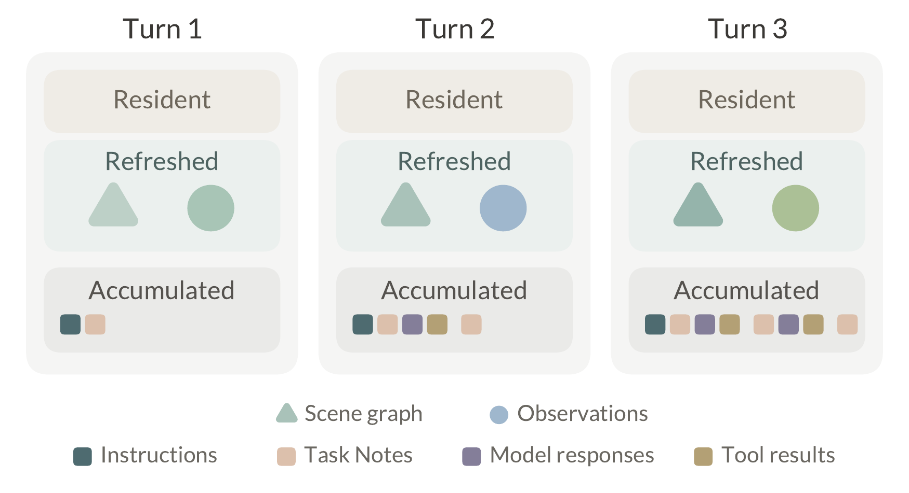
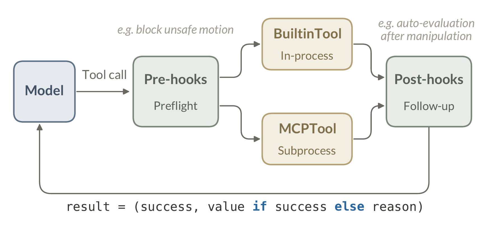
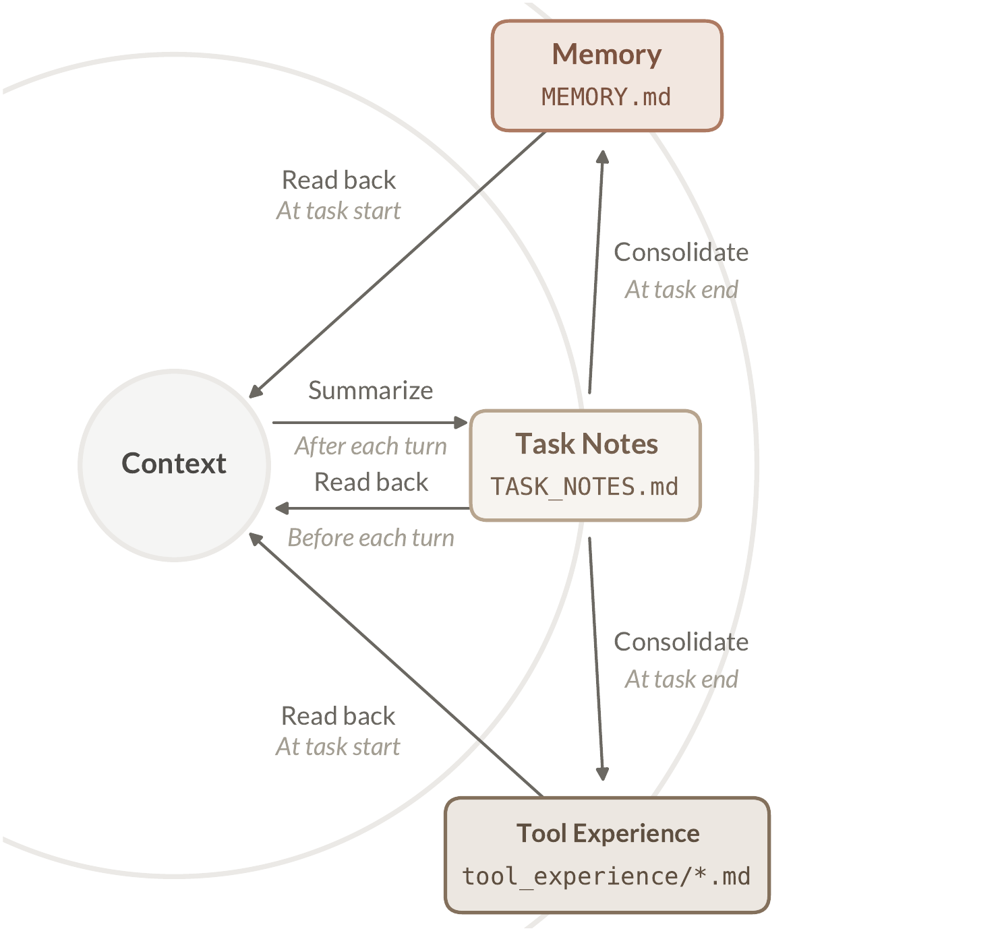

This section is organized by a single question: what form does each component of a coding agent take in the physical world? The answer has the following parts. An agentic loop (§3.1) drives the agent. At each turn the model, a vision-language model, reads the state of the world and issues a tool call for the harness to execute; we reserve policy for the low-level controllers that tools invoke. Context engineering (§3.2) determines what the model actually reads at each turn. A tool protocol (§3.3) defines how each capability is packaged so that the loop can execute it uniformly. A skill system (§3.4) injects domain knowledge into the context when the situation demands it. A memory system (§3.5) lets the agent accumulate what it learns, at every scope from a single task to the lifetime of a deployment. Finally, safety (§3.6) bounds what the agent may do at all. Each component is inherited from the architecture of coding agents, and each is reshaped in some way by the demands of the physical world. The components that the physical world requires, with no counterpart to inherit, follow in §4.
build_context — assembles everything the model reads, by lifetime;
expanded in §3.2 (Listing 2).update_memory — consolidates the finished task's record into
durable memory; the subject of §3.5 (Listing 7).
Listing 1 shows the agentic loop. Each turn, the harness gathers the context, the model reads it and picks the next action, and the harness executes the tool call it names and appends the result; a response with no tool call ends the task. This is the same loop that drives coding agents: the same accumulating messages, the same termination convention. The control flow fits in these few lines.
def agent_loop(instruction, session) -> str:
"""Perceive, decide, act, repeat until done."""
messages = session.messages
messages.append(instruction)
while True:
# perceive: gather what the model reads
context = build_context(session)
# decide: the model picks the next action
response = llm(context)
messages.append(response)
if not response.tool_calls: # done
update_memory(session)
return response.text
# act: execute one tool call per turn
call = response.tool_calls[0]
messages.append(execute(call))
Everything the model reads is curated in build_context, from
durable instructions to physical evidence gathered fresh every turn.
Section 3.2 unpacks this function, and the world state it
draws on is the subject of §4.1.
As in coding agents, every capability is exposed as a tool. Navigation, manipulation, evaluation, and user interaction are all entries in the same flat tool registry, and the loop has no special-cased logic for any of them. The model issues exactly one tool call per turn, because physical actions and their consequences are hard to predict. This reactive principle (execute one tool call, observe the outcome, then decide the next) lets the agent adapt to a world it cannot fully anticipate. The absence of a tool call closes the task, and the final text reports its outcome.
Under this design, evaluation is also a tool, but its invocation is not left to the model's discretion. In coding agents, evaluation is invisible. A shell command returns an exit code and a stack trace, and the model reads the result like any other tool output. The physical world provides no such signal, so Thea makes evaluation an explicit tool, and the harness triggers it structurally. A post-execution hook invokes the evaluator after every manipulation (§4.2).
Context engineering curates what the model reads. The context window is a
finite, attention-limited resource, and what fills it largely determines what
the agent does [13]. Unlike coding agents, which can often recover
context by reading durable files and preserving a growing transcript,
Thea must also refresh physical evidence whose
validity changes with robot motion and external events. Context engineering in
Thea therefore assigns each model-visible input both a
representational role and a lifetime, so stable operating knowledge, current
physical evidence, and historical trace occupy distinct parts of the context
window: resident, refreshed, and accumulated. Listing 2 unpacks
build_context from Listing 1, Table 1 lists the contents of each
lifetime, and Figure 3 shows how they evolve across turns.
Resident context holds the System Prompt, Memory, Embodiment Profile, and Tool Definitions. Accumulated context holds Instructions, Task Notes, Model Responses, and Tool Results. These two lifetimes behave just as they do in coding agents. Instructions stay, and the record grows. Refreshed context holds the Scene Graph Brief and Observations, and is where the difference above lands. Observations are the body's current sensor readings: camera images and clearance measurements, the LiDAR-detected distances to nearby obstacles. They expire quickly, and their durable content is distilled into the scene graph, a holistic representation of the world, so the latest of each is all a decision needs. Context-truncation experiments in robot manipulation point the same way. Models rely on the recent past far more than on a broad accumulated history [12]. Appendix B expands each item to its full model-facing structure.
def build_context(session) -> Context:
session.messages.append(task_notes())
return Context(
# resident: loaded at task start
session.system_prompt, session.memory,
session.profile, session.tool_schemas,
# refreshed: pulled fresh, kept latest
scene_graph.latest(), observe(),
# accumulated: the growing record
session.messages,
)| Lifetime | Contents |
|---|---|
| Resident | System Prompt. The agent's role and operating
rules. Memory. Durable memory from MEMORY.md:
preferences, conventions, and lessons.Embodiment Profile. Description of the active embodiment: body, cameras, frames, and physical limits. Tool Definitions. name,
description (with the tool's experience summary appended),
and inputSchema. |
| Refreshed | Scene Graph Brief. Compact rendering of the current
global world state. Observations. Camera images and clearance measurements. |
| Accumulated | Instructions. Messages from the user. Task Notes. Concise active-task working record. Model Responses. Model-generated messages, including text and previous tool calls. Tool Results. Return envelopes from executed tools. |
Resident. Resident context states the durable conditions for the next decision. The System Prompt states the agent's role and its operating rules: one tool call per turn, which evidence source serves which purpose, and when to re-observe instead of trusting stale context. Memory contributes durable knowledge carried across sessions, such as preferences, conventions, and lessons, while tool-specific experience is keyed separately (§3.5). The Embodiment Profile gives the model the body's cameras, frames, and physical limits in the same place every time (§4.3). Tool Definitions are the model-visible side of each tool's contract (§3.3); the post-condition never enters the model's context, and only the evaluator reads it (§4.2). When a tool has accumulated experience, the harness appends a compact summary of it to that tool's description at task start (§3.5).
Refreshed. Refreshed context states what the harness currently claims about the world, at two scales. The scene graph supplies the global scale: a structured summary of what is where, distilled from everything the robot has observed so far. The graph itself lives in the harness; what enters the context is its compact rendering, the scene graph brief, regenerated with source and freshness metadata before each model call (§4.1). Observations supply the local scale: current camera images and clearance measurements. These distances report the nearest obstacles forward, backward, left, and right for local motion decisions, not the semantic distance to a target. The two complement each other. Observations are raw and instantaneous, valid for this decision only, while the scene graph is organized and persistent, yet what it asserts is always about the present. Together they let the model ground every action in the world as it is, not as it was when some earlier tool ran.

Accumulated. Accumulated messages preserve what has happened within the session. When a new instruction arrives inside the same session, the harness appends it to existing messages rather than opening a separate transcript. Before each decision, the harness also appends Task Notes as a concise active-task working record. Inside the loop, Model Responses add model-generated text and previous tool calls, and Tool Results add compact return envelopes from executed tools. These entries help recovery by recording what was tried and what came back. Compaction touches only this lifetime. As a conversation nears the model's context window, older messages are summarized into a shorter record, while resident and refreshed context are preserved [13].
Every capability in Thea is a tool: a
name, a description, and an
inputSchema, the tool definition of the Model Context
Protocol [14]. Before a call, this definition is everything the model
knows about what a tool does, which is why coding agents treat this
agent-computer interface with the same care as an interface built for
people [15, 16, 17]. What the physical world changes is how much this
interface must specify. The rest of this section unpacks the protocol: the
contract a tool file carries, how it registers, the envelope every call
returns, who executes it, and the hooks it passes through.
The contract. A coding tool rarely needs to
explain when it will fail, but a physical tool wraps a policy with a success
distribution, so its description states preconditions (e.g. “target within
reach, gripper empty”), the character of the underlying policy, and what to
try when it fails. Each tool file also binds its own post-condition,
a few sentences stating what the world should look like if this particular
call succeeded; at evaluation time the evaluator retrieves it by tool name, so
the success criterion travels with the tool rather than with the prompt, and
the model never sees it (§4.2). In effect, each
tool file carries the tool's full contract: the inputSchema says
how to call it, the description says when, and the post-condition
says how its outcome will be judged.
def pick_up(
object_name: Annotated[str,
Field(description="...")],
...,
) -> dict:
"""Run CaP-X pick-object;
returns a run id.
When to use: ...
Readiness: ...
Do not use: ...
Result: ...
"""
# success criterion: fetched by
# evaluator, never shown to model
POST_CONDITION = ("...")pick_up), contents elided; it registers as the
Tool of Listing 4.Listing 3 shows the shape of one such contract as deployed.
Registration. A one-line registration,
server.tool()(pick_up), turns the file of Listing 3 into the
Tool of Listing 4: the function name, the docstring, and the
signature compile into the three fields of schema
(name, description, inputSchema), and the body is
what call() executes. Listing 4 also shows the envelope every
call returns; who executes it, and the hooks a call must pass through, are
traced by Figure 4.
class Tool(Protocol):
schema: dict # the MCP tool definition:
# {name, description, inputSchema},
# introspected at registration from
# the file's signature and docstring
def call(self, args: dict) -> dict:
# executes the tool file's function body
... # {"success": True, **value}
# or {"success": False, "reason": reason}
The envelope. Every tool returns the same
envelope: a success flag, a value when it succeeds, and a
reason when it fails. The value is, in the loop's vocabulary, the
model's next observation; for a policy-backed tool it can be as thin as a run
handle, an identifier for the ongoing policy execution (a run), with
the substantive evidence arriving when the post-hook brings in the evaluator
(§4.2). Failure never raises an exception; a
failed call returns a reason such as “the robot is too far from
the target to grasp”, the closest thing a physical action has to
stderr. How verdicts and reasons are produced is the subject of
§4.2; what the agent does with them is
deliberately unscripted. Recoveries emerge from the model recombining the same
tools, not from hand-designed recovery routines.
Execution. Who executes a call depends on its
weight. Lightweight queries run in-process (BuiltinTool in
Figure 4), while heavyweight capabilities (e.g. the navigation stack, the
manipulation policies) each run in their own subprocess speaking the Model
Context Protocol [14] (MCPTool). The registry presents
both as one flat list, and the model cannot tell them apart. This indifference
is what portability rests on. A policy backend can crash, restart, or be
upgraded behind the same interface, and nothing above the protocol notices;
the same subprocess boundary is what lets one harness drive backends written
against three different robot stacks.
Hooks. A call never travels straight from the model to the tool (Figure 4). Each call passes through deterministic interception points that the harness owns and the model cannot skip: pre-execution hooks that preflight the call (and may rewrite or block it), and post-execution hooks that trigger follow-up work; an intercepted call returns through the ordinary result channel like any other failure. The two that matter most are a safety check that reads fresh clearance measurements before any base motion (§3.6) and a hook that invokes the evaluator automatically after every manipulation (§4.2). One discipline decides where each rule lives: rules about a single tool go into its description; rules the model must never be trusted to follow go into hooks; neither belongs in the system prompt, which stays short and tool-agnostic.
Tools give the model capabilities; skills give it knowledge. Concretely, a
skill is a directory holding a SKILL.md file: YAML front matter
carrying a name and a description, an instruction
body in free-form markdown, and optionally bundled resources such as reference
files or scripts. Loading follows the progressive disclosure of coding
agents [18], in three levels: the name and description of every
registered skill stay resident in the context at a cost of tens of tokens
each, the body enters the context through load_skill only when
the model judges that the task at hand matches a description, and bundled
resources are read only if the instructions call for them. Nothing in this
mechanism is specific to robots; it transfers unchanged.
What the physical world sharpens is the boundary between skills and tools. A tool is a contract: schema validation, safety checks, permissions, and evaluation all attach at the call boundary (§3.3). A skill is advice: text the model reads and may weigh. In a world with no sandbox and no undo, whatever acts must sit on the contract side, so a manipulation policy is always wrapped as a tool and never delivered as a skill that teaches the model how to invoke it; on the advice side the guarantees would have nothing to attach to. Skills are left holding exactly what text is good at: knowledge. Which knowledge is decided by elimination: rules about a single tool go into its description, behavior needed on every turn goes into the System Prompt (§3.2), lessons the system accumulates on its own go into memory (§3.5), and what is left falls to skills. In practice this ranges from the operating sequence of a particular appliance to the house rules of a particular workspace.
---
name: tidy-workspace
description: Rules for tidying
a desk: what to remove, what
to keep, and how to report.
---
## Working order
- ...
## What to remove / what to keep
- ...
## Wrap-up
- ...tidy-workspace/SKILL.md, contents elided.Listing 5 shows the shape of one deployed in Thea: a page of boundary judgments for tidying a desk, knowledge at the level of convention rather than of operation. As a skill is only text, the skill system extends by editing a file: a new appliance, a new house rule, with no retraining and no code change.
Memory in Thea is a lifecycle rather than a single store.
Task Notes. Inside a running task, the agent first needs a notepad: a place that keeps what has been done and what remains, so that a long task never depends on the model re-deriving its own progress [13]. In Thea this notepad is Task Notes, a concise record that preserves continuity inside one task. A task begins when the user gives an instruction and ends when the model returns no tool call. At task start, the harness resets Task Notes. After each tool result, it appends a brief event. The notes carry the current goal, phase, and timeline. They are the working record for the active task, not a session transcript and not live world state.
Task Notes
Task summary:
- Goal: current instruction
- Current phase: ...
Timeline:
- task_start: ...
Memory
- [user-preference] User gives
robot tasks in Chinese.
Tool Experience
open_drawer
Success:
- Lower drawer pulled outward
with a visible gap.
Failure:
- If distance is reported or no gap
appears, move forward before retrying.
Durable stores. Beyond a single task, the agent
needs durable memory. Some of what it learns is general: who the user is and
how things are usually done. Some is specific to one tool: how it succeeds and
how it fails, lessons that make the next call better. Coding agents have
little of the tool-specific kind: grep does exactly what its
description says, every call, so the tool itself leaves nothing to learn. A
tool that wraps a policy is different. Its description promises only a
tendency, and where it actually succeeds or fails must be learned from
use [19] (§3.3). Thea
therefore keeps two durable stores: MEMORY.md, the same
cross-session memory file a coding agent keeps, and
tool_experience/, one file per tool. Both are written at task
end, when the harness consolidates the completed Task Notes, splitting entries
by where they will return to the model: cross-task knowledge to Memory,
tool-scoped lessons to that tool's experience file. The consolidation call
scores each candidate, and the harness writes only those above a confidence
threshold. Evaluator verdicts
(§4.2) enter this pipeline only as evidence in
the trace, never as direct writes. A single verdict is a hypothesis, and
whether the agent actually recovered from it shows only in the completed
trajectory. Listing 7 shows the consolidation step, and Figure 5 draws the
full cycle.

MEMORY.md and accepted tool-scoped
lessons to that tool's experience file. At task start, both are read back into
resident context, Memory directly and tool experience as a summary inside each
tool's description.def update_memory(session) -> None:
"""Consolidate a finished task into durable memory."""
# one model call reads the completed Task Notes and
# splits them: cross-task knowledge vs tool lessons
memory, lessons = llm(CONSOLIDATE, session.task_notes)
append_memory("MEMORY.md", memory) # user preferences
for lesson in lessons: # how a grasp fails
path = f"tool_experience/{lesson.tool}.md"
append_memory(path, lesson.entry)Read paths. The three read-back arrows differ in what the return buys. Task Notes expire with the task; until then, each snapshot keeps the model current on its own progress. Memory returns as resident context, so durable knowledge is visible on every decision without an extra tool call. Tool experience is keyed by tool identity rather than by session or user; the harness appends a summary of each tool's file to that tool's description, so the lessons sit beside its preconditions, failure modes, and recovery hints, exactly where the model weighs whether to call it. Description quality largely determines call quality [17], so the memory lifecycle does more than remember. What it writes and reloads is, in effect, the interface between the model and its tools. The agent improves its own interface with use.
Coding agents secure themselves with permission rules and an operating-system sandbox [20]: the rules tell the agent what it should do, with denials enforced below the model, and the sandbox bounds what it can do. Neither is available in the physical world. No sandbox contains a physical action (simulation covers part of this need, but not the deployed world), and many actions cannot be undone. Safety must therefore be enforced before the action.
[21]: Ahn et al. (2024), Autort: Embodied foundation models for large scale orchestration of robotic agents.
Thea builds safety into the machinery rather than into
the model's behavior [21]. Deterministic checks live in the hooks and
the execution pipeline of §3.3, and the model can neither
skip nor persuade them. The main one is a safety filter on base
motion. Before the model decides, the filter puts four-direction clearance
measurements into the refreshed context, so the model plans with nearby
obstacles in view. Before the robot moves, its hook obtains a fresh reading,
blocks navigation when no immediate direction is admissible, and clamps direct
translations to the admissible distance. The loop itself is conservative:
physical actions run one at a time (§3.1), a failure budget
halts the loop instead of letting it run away, and when unsure the agent can
stop and ask the user (query_user, §3.7).
Safety is one of the deepest differences between coding agents and embodied
agents in the physical world; Thea makes an initial
attempt, and much remains open: force limits, safety around people, and
deployment beyond the lab.
Coding agents keep the user reachable throughout a task. The model can ask a
blocking clarification question or surface progress, and autonomy is defined
with structured returns to the human for information or judgement [16].
Thea carries this over as two tools whose endpoint is
a person. query_user asks and waits: for a choice among lookalike
targets, for confirmation of a borderline action, for permission before
touching something personal. notify_user tells without waiting:
that a long action is starting, that something unexpected happened, that the
task is beyond what the robot can do. When to call either is a tool choice
like any other in the agentic loop (§3.1).
In the harness, the two tools compose with everything else. Because they are ordinary tool calls, everything that shapes tool choice shapes them too. A question comes as a last resort rather than a reflex, after the scene graph and the current observations have been consulted, and it can attach the graph's candidate refs and views so the answer returns as evidence the rest of the task can ground on (§4.1.2). A skill can state when a notification is warranted for its task, and Memory keeps settled answers as standing preferences so the same question is not asked twice. Keeping the user in the loop is what keeps an embodied agent adaptive to the unknown and the unexpected: it neither guesses nor fails silently.